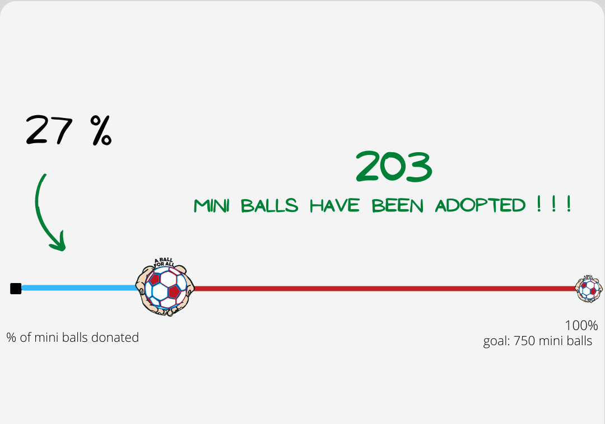

750 mini balls to be donated to blind children in Kenya
One Big Project - Many Goals - Growing Up Blind In Kenya - Documentary Summer 2021
1 country
It is our first big campaign dedicated to donating 750 mini balls only to one
country. There are 700 visually impaired pupils living in one city, learning
within 2 schools. They have already heard about one the mini ball which unites
the world, and can't wait to meet A Ball for All!
1 project
In June 2021, A Ball for All is making a documentary about 700 pupils growing up
blind in Kenya. It is a unique documentary idea which increases public awareness
of sight loss and low vision, showing untold stories of blindness in Kenya.
2 schools
A Ball for All chose 2 schools to visit, inspire and donate 750 mini balls to
children with visual impairments. It is so important for blind children to find
a hobby that brings them joy. They will able to play football together and learn
so much every day.
700 pupils
A Ball for All would like to donate 750 balls, one ball to each blind child and
50 balls dedicated for schools. We are asking for your help to support our big
project. Together we will improve and transform their lives.
Exploring The World - Greece
Playing Blind Football - Botswana
Being the best guide dog - Ireland
Finding joy - Antigua and Barbuda
Being an inspiration to all of us - Norway
Learning each day - Mali
We all love sport - Hungary
Help them play Blind Football
Adopt a mini ball and donate it to one of the blind children from Kenya. We
believe that together we can donate 750 mini football balls to Kenyan blind
children in June 2021. We launched our fundraising website to raise money online
till Easter 2021, and we sincerely appreciate your support. Every donation
matters; every donation counts. Each euro has enormous power and helps us to
reach our goal. Below you can find our countdown with numbers of adopted balls.
All updates are presented on our Facebook profile, so please follow us. Each
donor will be listed (if wanted) at the end of OUR BIG PROJECT!
A BALL FOR ALL KENYA SUMMER 2021

A few facts about visual impairment
Blindess in numbers
Worldwide, 285 million people are visually impaired; 39 million are blind and
246 million have low vision. An estimated 500 000 children become blind each
year, but in developing countries up to 60% are thought to die within a year of
becoming blind.
How blindness starts
Some people have been completely blind since birth, while others may have dealt
with a slowly declining vision for decades. The millions of people who are blind
or visually impaired all possess varying degrees of sight and have vastly
different needs and abilities related to their sight loss.
Guide dog
Only 1-2% of visually impaired use a guide dog even though the majority of dogs
are provided free of charge. These service animals are carefully trained to lead
their owners around other people and obstacles. The first guide dog was issued
in 1916 to a blinded veteran, Paul Feyen.
White cane
James Biggs of Bristol claimed to have invented the white cane in 1921. After an
accident claimed his sight, the artist had to readjust to his environment.
Feeling threatened by increased motor vehicle traffic around his home, Biggs
decided to paint his walking stick white to make himself more visible to
motorists.
Sports
Being diagnosed as blind or partially sighted does not mean that a a person has
to give up on sports. In fact, there are many sports which have been adapted for
those who are blind or partially sighted, as well as entirely new sports only
open to people with a sight condition.
Famous Blind People
Andrea Bocelli has been completely blind at age 12, one of the most successful
musicians of all time. On May 25, 2001, Erik Weihenmayer became the first blind
person to reach the summit of Mount Everest. Marla Runyan is the first legally
blind athlete to compete in the Olympics. Trischa Zorn, blind since birth, has
won 55 medals, making her the most successful athlete in the history of the
Paralympic Games.